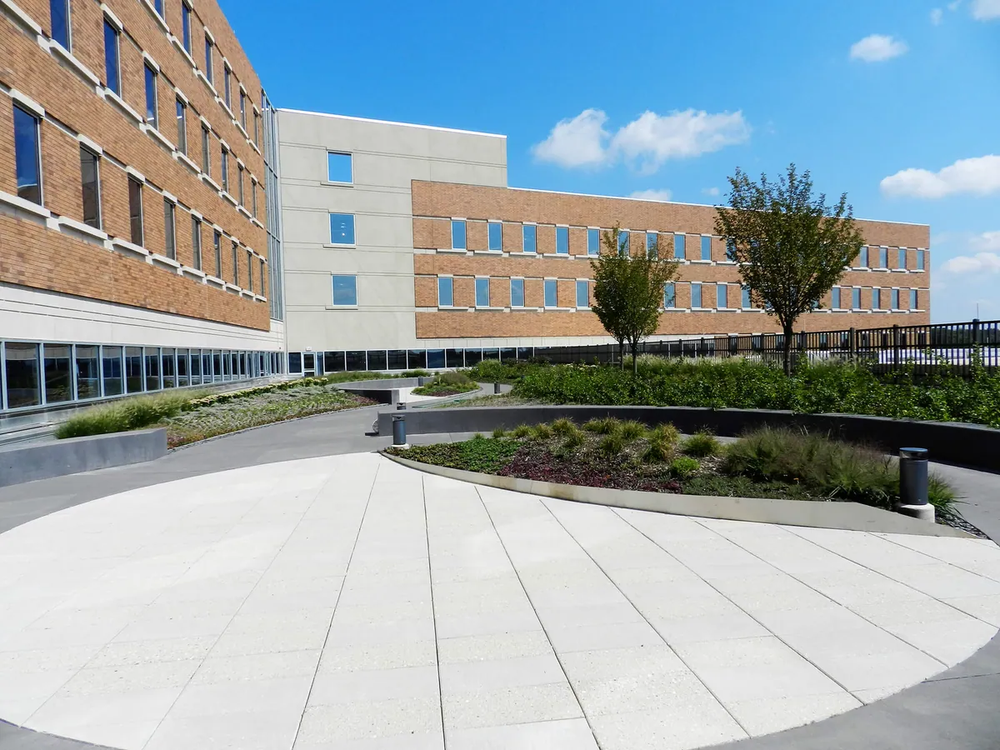

Services
Every landscape discipline, self-performed.
Nine in-house specialties — from site prep to lighting — delivered by one accountable team that follows the plans to the letter.
Site Prep
The key to a successful project is site preparation. This critically important step lays the foundation for the landscape.
From subgrades, grades and soil amending (on or off site) to final grading, topsoil screening and installation — by hand or by 30-yard dump — our team takes extra time to make sure every aspect of this work is completed per the specifications.
- Subgrade & finish grading
- Soil amending on or off site
- Topsoil screening
- Engineered & green-roof soils
- Hand or 30-yd dump install
- Water-feature piping prep
Landscaping
From native plants to exotics, we offer an expansive inventory of trees and plant material — and contract growing for projects of every type.
We work closely with suppliers to ensure the highest quality, and with architects and designers to prepare and install grasses and custom wildflower meadows that achieve the desired aesthetic. Years of experience with grasses let us plan, plant and space them correctly, so landscapes get better over time.
- Trees & specimen plantings
- Contract growing
- Meadow & wildflower mixes
- Ornamental grasses & bioswales
- Sod & play areas
- Enclosed & children's gardens
Hardscape
Our own in-house craftsmen have installed every type of hardscape: bluestone, granite, tile, colored concrete and manufactured pavers.
Pedestal-set roof plazas, vehicular pavers on asphalt or concrete bases, granite steps and bench walls — if the owner, contractor or architect can envision it, we can deliver it.
- Bluestone & granite
- Pedestal paver systems
- Vehicular pavers
- Colored concrete
- Bench & seat walls
- Cobblestone walks
Structures
Pergolas and gazebos, retaining walls, bench walls, garden walls, flagpoles and fences — built for commercial landscapes for over 40 years.
Our master craftsmen are known for exacting attention to detail and for following plans to the letter. It's one reason we have long-standing relationships with so many clients.
- Pergolas & gazebos
- Retaining walls
- Garden & bench walls
- Fencing
- Flagpoles
- Teak & steel capping
Water Features
Often the most dramatic focal point of a landscape. Water walls, pools, natural streams and fountains demand technical expertise and complex engineering.
We've built a 120-foot-long, 35-foot-high cascading water wall, double-sided walls, streams dropping to stainless basins and features relocated from a client's old facility to its new home. Whatever you can imagine, we have the experience to bring it to life.
- Cascading water walls
- Reflecting pools
- Natural streams
- Fountains & basins
- Pumps & piping
- Feature relocation
Green Roofs
From city towers to parking garages, more buildings are going green on top — to conserve energy and improve how the structure looks and lives.
Once the architects and designers set their goals, they trust us to accomplish them on time and on budget. We've completed many complex green-roof projects, including 80,000 sq ft of intensive and extensive roof at Reading Hospital, and are certified Roof Meadows, American Hydrotech and LiveRoof installers.
- Intensive & extensive systems
- Lightweight engineered soils
- Sedum & ground-cover
- Roof-top public parks
- Pedestal plazas
- Certified installer
Wetlands
We take pride in our expertise in wetland restoration, preservation and creation — including eleven acres of newly created wetland.
Working closely with soil conservation districts, the NJ D.E.P. and our clients, we handle every aspect of the project: clearing, excavating, planting and protection. It's gratifying to see our labor directly preserving natural resources.
- Wetland creation
- High & low marsh planting
- Aquatic ponds
- Excavation & clearing
- Geese & wildlife fencing
- Agency coordination
Irrigation
Licensed to install any type of irrigation system — on well systems, city water or water-storage tanks. All irrigation is handled in-house.
Water conservation is a key consideration on every project, especially LEED (green) projects. Good irrigation is one of the most important steps in maintaining a property and keeping the landscape healthy and valuable.
- Weather-sensing controllers
- Rainwater storage tanks
- Well & city water
- Matched-precipitation heads
- LEED water conservation
- NJ Irrigation License #285761
Lighting
Landscape lighting enhances every project and is particularly effective at showing off a dramatic water feature or structure.
Lighting also contributes to safety and lets people enjoy the landscape well into the evening — from fiber-optic wall capping to pool and water-wall illumination.
- Water-feature lighting
- Fiber-optic accents
- Pool lighting
- Pathway & safety lighting
- Recessed LED in granite
- Coordinated with electrical